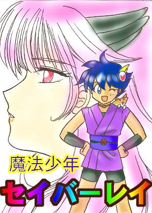
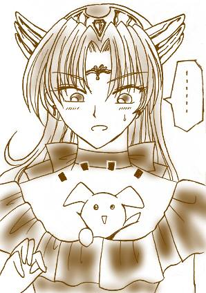

戻る
魔法少年セイバー☆レイ（超元祖）
すぺしゃる劇場

作：八重洲二世
イラスト：リンリン
聖羽玲：一見、どこにでもいるフツウの中学一年生だが、じつは正義の魔法少年セイバー・レイに変身することができる。ちなみに、前園さんはギリシアで聖闘士になったと信じている。
ネギミソ：フェラリラーサの女王によって玲のもとに遣わされた魔法小動物。「玲くん、これは事件よ！」が口ぐせ。エビスビールが好物。
御影愁：玲の親友。ちょっぴり内気な少年。第14話でセイバー・レイの正体を知ってしまったあと、えらいことに。
シルフィー・ミカ：御影愁が、暗黒魔法界の住人ゴーリキー=ガウシアン=山本の手によって暗黒魔法少女に改造された姿。とっても攻撃的な性格。“漆黒の流れ星”という良く考えると地味な異名で呼ばれることも。
ヤエスゥ：暗黒魔法生物。愁のお目付役。ミカの胸の谷間がお気に入りスポットという困った生物。
INTERMISSION 1:
「とどめだっ！ セイバー☆エーンド!!」
どーん。
吹っ飛ぶ暗黒獣。
魔法スティックをクルクルッと回して腰におさめるレイ。
「やったわね、レイ」
「へっ、ちょろいもんさ!!」
駆け寄ってくるネギミソに、レイはＶサインを作ってみせる。
不意に、ネギミソの毛がぶわっと逆立った。
「どーした、ネギミソ？」
「気をつけて、レイ。敵だわ！ この暗黒エナジーは、まさか……」
レイは、強烈な殺気を感じ取って、反射的に振り返った。
地平へとまっすぐに続く道の向こうから、爆音がとどろいてくる。
陽炎にゆれるバイクの影。
漆黒のバイクにまたがるのは──
武骨なマシンを乗りこなしているのは、華奢な手足の暗黒魔法少女だった！
ゴーグル以外は、黒エナメルのフリフリな暗黒魔法少女のコスチュームで、ミカは野生馬のようなマシンを御している。
ブオンッ、ギャギャッ
バイクは、レイの目の前で華麗にターンした。一瞬遅れてブワッと土埃があがる。
「出たなっ、シルフィー・ミカ！」
レイは土埃の向こうにいるはずの好敵手に向かって叫ぶ。
「あら、どっちを見てるのかしら？」
「あれ?!」
ミカの声は、レイの頭上から降ってきた。
ぎくりとして顔を上げると、いつのまにかミカは背後の塀の上に身軽に立っていた。腕を組んで、余裕たっぷりにレイを見下ろしている。
「今日こそ決着をつけてやるわ、セイバー・レイ！」

「そりゃ、こっちのセリフだぜ。覚悟しな。いままでの悪事、泣いて詫び入れさせっかんな！」
「フンッ。いつまでそうやって、強気でいられるかしらね？」
ミカは、歳不相応に妖艶な仕草で唇を湿した。
「ところで、ミカ。お前、いつから女言葉になったんだ？」
「なっ……ば、ばか、余計なお世話だよ。これは、ゴーリキーのやつがそうしろって言うから……別に、オレが女言葉気に入ってるとかじゃなくてだな、」
「あー、また、『オレ』って言う。ダメ、ダメ」
シルフィーミカの大きく露出した胸の谷間から、ヒョイと暗黒小動物ヤエスゥが顔を出した。
「美少女が台無しだって、ゴーリキー様がお嘆きだよ？ ホラ、言ってみそ。わ、た、し」
「うるせぇっ！ てめえ、またソコに潜りやがって!!」
「ぐえっ」
ミカの手がヤエスゥを引きずり出して、キュッとその首を絞める。
息の根を止められ、プラーンとぶらさがったヤエスゥを放り投げるミカ。
「セイバー・レイ、お前を倒す！……お前を倒して、ゴーリキーに魔法を解いてもらうんだ！」
「魔法を解くって……うわわっ?!」
ミカが躍りかかる。
ミカのバトンには暗黒魔法でできた黒い刃が生えている。
ブオンッ
漆黒の刃が流れ、黒エナメルのミニスカートが翻る。
レイはとっさにとんぼをきって、間一髪、攻撃を避けていた。
「きたねーぞ、不意打ちなんて！」
「うるさい。男のくせに文句言うな！」
「女なら、なんでもアリかよ！」
「オレだって……好きでこんな、」
「おっと、隙ありィ!!」
レイは好機を見逃さず、スティックを振って光のシャワーを暗黒魔法少女に浴びせる。
「きゃあっ…………こっ、この程度の魔法がっ、オレに通用すると、」
「思ってないよーん！」
一瞬にして間合いを詰めていたレイが、ぺろりと舌を突き出す。
「くらえ！ セイバー☆エーン……どっ?!」
こつーん☆
石に蹴つまずいたレイが体勢を崩して、前のめりのまま宙に浮いた。
ばたばたっ、と両手をぶん回しても慣性の法則は曲げられない。
「わぁぁ、どけ、どけっ!!」
「くっ、くるな、くるな!!」
っど〜〜〜〜〜んっっ☆
元気な音を立てて、少年と少女はごろごろと道を転がった。
「イテテ……」
レイは起きあがろうと、手をついた。
まだ、衝突の余韻で、頭がクラクラする。
「んっ？」
レイは、手のひらに、不思議な感触を覚えた。
ほにゃ、ほにゃ。
いつのまにか、仰向けに倒れたミカの上に覆い被さる格好になっていたのだ。
レイの手が触れたのは、発育途上☆なシルフィー・ミカの可愛らしいふくらみだったのだ。
「あ…………」
えっちな本すら読んだことのないレイ＝玲にとって、この状況は、まさに未体験スペクタクルゾーン三回転半ヒネリだった。
ごくり。のどが鳴る。
半ば放心状態のまま、レイは魔法少女の胸をやわやわとこね回した。
 「はっ!!」
「はっ!!」
はたと、正気に返るレイ。
「う、うぉ?! お、オレ、いったい何を？」
「人のムネ揉んで、『何を？』じゃ……」
レイに組み敷かれたシルフィー・ミカは、首まで茹で蛸のような色に染まっていた。
「ないだろうッ！ このドスケベ!!」
ごべしっ
鉄拳一発でレイは吹っ飛んだ。
一方、立ち上がったミカもふるふると震えていて、しかもよく見ると目じりには涙まで浮かんでいる。
「揉まれた……しっかり揉まれた……よりによって、セイバー・レイに……」
「あの……わ、わりっ！ わざとじゃないんだ！ 信じてくれ！ ……って、やっぱ無理？」
ぎりりっ、とミカの手がバトンの柄を握りしめる。
「ひええっ」
レイは半ば逃げ腰になって、魔法攻撃に備える。
が、当然予想していた暗黒魔法乱れ撃ちはやってこなかった。
くるり、とミカはきびすを返す。
「うわ〜ん、覚えてろセイバー・レイ!! この借りは、一兆億倍にして返してやるからァ〜〜」
泣きベソをかきながら、シルフィーミカは走っていった。
途中でくるりと反転して戻ってくると、レイに、げしげしっとミニスカートで膝蹴りをかまし、それから改めて走り去っていった。
「げふっ……」
地面に這ったレイは、暗黒魔法少女の後ろ姿を見送ることしかできなかった。
「おそろしいヤツだぜ……漆黒の流れ星、シルフィー……ミカ！」
……五分後。
その場で変身を解いた聖羽玲の前に、ひょっこりと親友の御影愁が現れた。
「愁！ いやぁ、キグーだよなぁ。じつはオレ、さっきまでここで例のシルフィー・ミカって奴と死闘を繰り広げてたんだよ」
「ふ、ふぅん。そうなんだ？」
愁は、こころなしかやつれた顔をしていた。まるで、何かとってもショッキングな目に遭った直後のようだった。
「お前、だいじょうぶか。マジで顔色悪いぜ。また、いじめか？ いじめに遭ってんなら、オレに言えよ？ いじめっ子なんか、１ナノ秒で倒してやっかんな」
「だいじょうぶ。えっと、単なる寝不足だから」
「そーかー？」
「それより、玲くんこそ、その痣……」
玲は、顎に手をやった。
ミカの鉄拳をくらったときの痣だ。
「へん、どうってことないね。──イテッ」
愁が、痣に触れたのだ。
「ちょっと腫れてる。……ごめんね、僕のために……」
「なに言ってんだよ。愁は関係ねぇじゃん。悪いのは、ミカだよ。シルフィー・ミカ！」
「う、うん……」
なぜか愁は、余計に気まずそうにうなだれてしまう。
ごめんね。
僕、変身すると自分が抑えられなくなっちゃうんだ──。
少年のつぶやいた言葉が、玲の耳に入ることはなかった。
「見ろよ、愁！ シルフィー・ミカが残してったバイクがあんぜ！ これって、中古ショップに売れねーかなー？」
「ダメだと思うよ……違法改造車みたいだから……」
「あ、そっかー。残念だなー」
二人の少年は、肩を並べて家路へと向かう。
その途中、ふと足を止めて愁が尋ねた。
「ねぇ、玲くん」
「あ？ どした、いきなり？」
「あのさ…………玲くんは、シルフィー・ミカのこと、どう思う？」
「どうって、そりゃあ──」
思いもかけなかった質問に、玲は言いよどむ。
つっけんどんで、乱暴者で、おまけに玲の命を狙ってる（らしい）暗黒魔法少女の姿がちらりと頭をかすめる。
次にちらりと頭をかすめたのは、あのときの『ほにゃ、ほにゃ』という、えもいわれぬ感覚だった。
そして、玲は自分の手のひらを見つめながら、真顔で言った。
「きもち、よかったよなー。あれが、女の子のムネなんだ……」
「玲くんのバカッッ」
ばっちーんっっ☆
「ほえ？」
いきなり親友に頬をひっぱたかれて、玲は目を丸くした。
愁は、真っ赤になって胸のあたりを腕でかばっている。
「玲くんの、ばかえっち変態！ ドスケベ！ えろがっぱァ!!」
一気にまくしたてると、愁は全力疾走で玲の前から姿を消してしまった。
「は、はいぃ……?!」
聖羽玲。花の、中学一年生。
彼が、漆黒の流れ星シルフィー・ミカの正体を知るのは、まだまだ先のことであるっ☆
（おわっときなさい）
あとがき
この作品の前作（セイバーレイ１４話）は、少年少女文庫に載った最初の作品だったような記憶があります。三年ほどかかってようやく続編というか番外編が一本できました。火浦先生もびっくりの執筆ペースです。当時すでに死にギャグだった前園さんネタの風化具合が自分ではとっても気に入ってます。いじめ、カッコ悪い！
あ、最近ビックリマンにはまってます。
買ってますよ、チョコを。そりゃあもう大人買いで。ビックリマン２０００とビックリマン超元祖、コンビニに入るたびにチビッ子たちを蹴散らして箱ごと買ってます。モナモナもビックリだよ〜。（ビックリフェアリー）
アニメのビックリマン２０００に先週出てきた闇の暗殺天使、千舞道士は陰のある美形男とみせかけてじつは女でした。ああん倒錯の魅力〜。でも一回こっきりキャラなのね。そんなわけで久しぶりにテレビアニメを録画してまで見てます。鈴木真仁ちゃん、上手くなったよねぇとかしみじみ思ったりしながら。
戻る
※匿名・仮名で構いません。
※書き込み後は、ブラウザの「戻る」ボタンで戻って下さい。